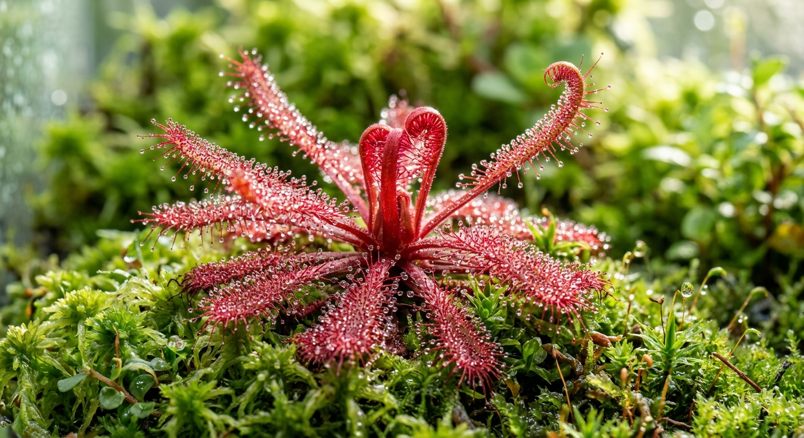
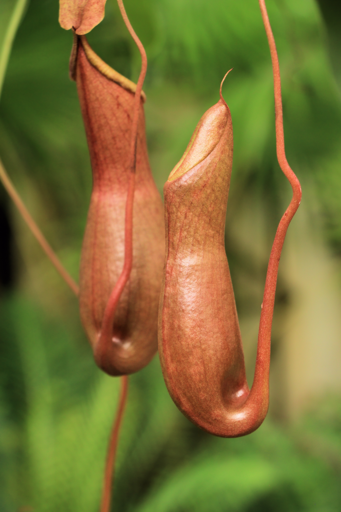
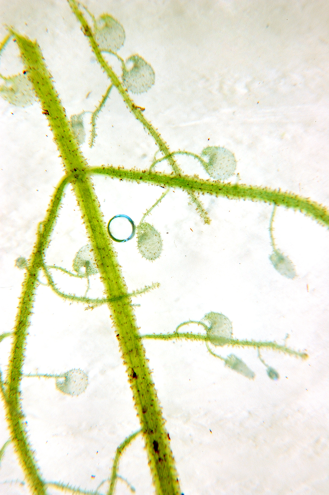
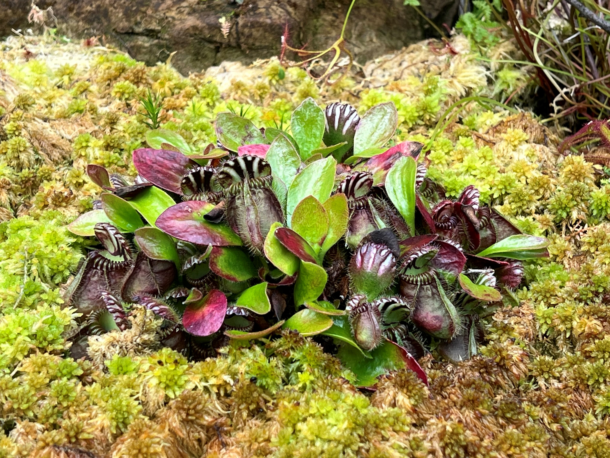
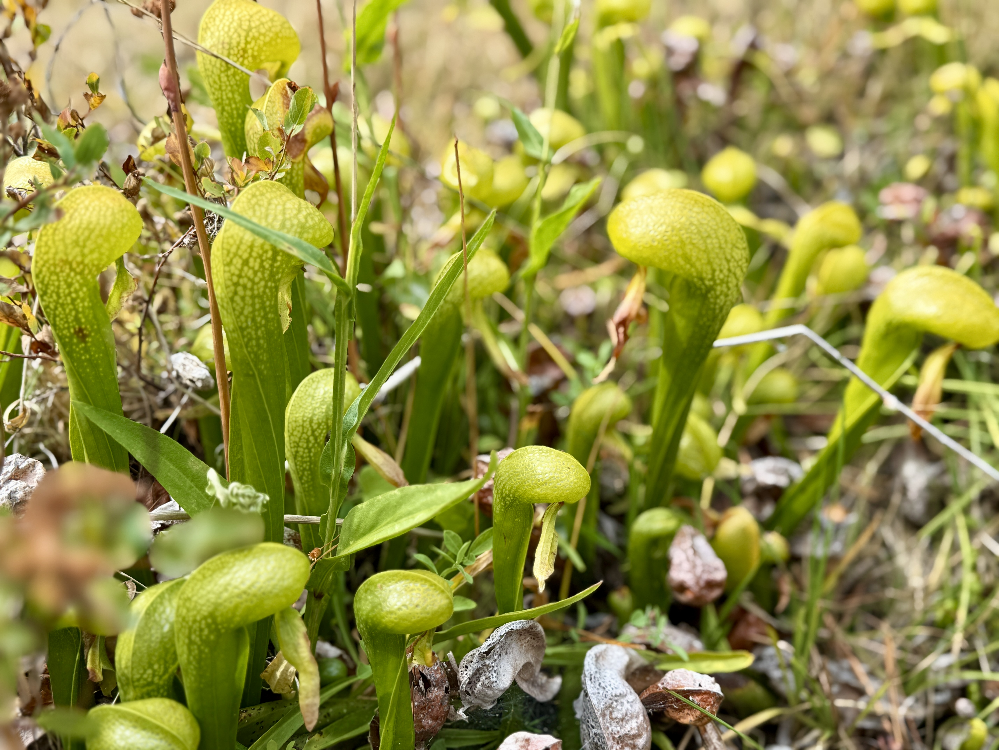

Prima di iniziare
Le piante carnivore non sono tutte uguali. Dionaea e Sarracenia sono piante temperate da esterno; Nepenthes è tropicale; le pinguicule messicane e temperate hanno cicli differenti. Anche all'interno dello stesso genere possono esistere specie con esigenze diverse. Per questo ogni scheda distingue le regole generali dalle eccezioni più importanti.
Le miscele per piante comuni contengono nutrienti e sali che possono danneggiare le radici delle carnivore.
Se coltivate nelle condizioni corrette, catturano da sole le prede; fertilizzanti e cibo umano possono provocare danni.
È utile per molte specie palustri, ma può essere dannoso per Nepenthes e numerose pinguicule messicane.
Il nome botanico è indispensabile soprattutto per Drosera, Pinguicula, Utricularia e Nepenthes.
Scegli la pianta da consultare
Apri la scheda per accedere alle istruzioni dettagliate e al calendario stagionale.

Drosera
Genere Drosera – drosere
Apri la guida completa →
Dionaea
Dionaea muscipula – Venere acchiappamosche
Apri la guida completa →
Pinguicule messicane
Pinguicula – specie messicane
Apri la guida completa →
Pinguicule temperate
Pinguicula – specie temperate
Apri la guida completa →
Sarracenia
Piante ad ascidio nordamericane
Apri la guida completa →
Nepenthes
Piante tropicali ad ascidio
Apri la guida completa →
Utricularia
Specie terrestri, acquatiche ed epifite
Apri la guida completa →
Cephalotus
Cephalotus follicularis
Apri la guida completa →
Darlingtonia
Darlingtonia californica – pianta cobra
Apri la guida completa →Dopo aver curato le tue piante,
lasciati incuriosire da un'avventura.
Se in casa ci sono giovani lettori, c'è anche un mondo di fantasia da scoprire: la trilogia di Alistair, tre storie tra avventura, mistero, personaggi stravaganti e amicizia.
La guida botanica resta il cuore di questa pagina. La trilogia è una lettura extra.